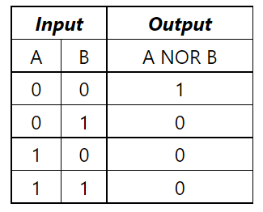

Pengertian komputer
Kata komputersebenarnya berasal dari Bahasa Yunani yaitu COMPUTARE yang berarti menghitung. Berdasarkan arti tersebut,maka secara harfiah komputer bisa diartikan sebagai sebuah alat elektronika yang memiliki kemampuan untuk melakukan suara untuk menghasilkan output yang kita kehendaki. Menurut Hamacher Komputer adalah mesin penghitung elektronik yang cepat dan dapat menerima informasi input digital, kemudian memprosesnya sesuai dengan program yang tersimpan di memorinya dan menghasilkan output berupa informasi, menurut Blissmer komputer adalah suatu alat elektronik yang mampu melakukan tugas sebagai input, memproses input tadi sesuai dengan programnya,menyimpan perintah-perintah dan hasil dari pengolahan, serta menyediakan outpun dalam bentuk informasi. Pada intinya komputer ialah mesin menghitung dimana diperlukan input untuk diproses dan menghasilkan output yang berupa informasi.
Sejarah Komputer
Sejak dahulu kala, pengolahan data telah dilakukan oleh manusia. begitu juga manusia menemukan alat mekanik dan elektronik untuk membantu orang menghitung dan mengolah data untuk mendapatkan hasil yang lebih cepat. Komputer yang
kita lihat hari ini merupakan proses panjang perkembangan penemuan manusia dari jaman dahulu berupa alat-alat mekanik dan elektronik.
Saat ini, komputers dan perangkat pendukungnya telah dimasukkan ke dalam semua aspek kehidupan dan pekerjaan. Komputer yang ada saat ini mampu melakukan lebih dari sekedar menghitung matematika biasa. Diantaranya adalah informasi
di layar supermarket yang mampu membaca kode toko kelontong, pertukaran telepon yang mengelola jutaan panggilan dan komunikasi, jaringan komputer dan Internet menghubungkan banyak bagian dunia.
Bagaimanapun juga alat pengolah data sejak jaman purba sampai saat ini bisa kita golongkan ke dalam 4 golongan besar:
1. Peralatan manual: yaitu peralatan pemrosesan data yang sangat sederhana, dan faktor Yang terpenting dalam menggunakan alat adalah menggunakan tangan manusia.
2. Peralatan mekanik: yaitu peralatan yang sudah berbentuk mekanik yang didigerakkan dengan tangan secara manual.
3. Peralatan Mekanik Elektronik: Peralatan mekanik yang digerakkan oleh secara otomatis oleh motor elektronik.
4. Peralatan Elektronik: perlatan yang bekerjanya secara elektronik penuh . Tulisan ini akan memberikan gambaran tentang sejarah komputer dari masa ke masa, terutama alat pengolah data pada golongan 2, 3 dan 4. Klasifikasi
komputer berdasarkan generasi juga akan dibahas secara lengkap pada tulisan ini.
A.Komputer Generasi Pertama (1946-1959)
Dengan pecahnya Perang Dunia Kedua, negara-negara yang terlibat dalam perang
mencoba mengembangkan komputer untuk memanfaatkan potensi strategis komputer.
Ini meningkatkan pendanaan untuk pengembangan TI dan mempercepat kemajuan teknis
komputer. Pada tahun 1941, Konrad Zuse, seorang insinyur Jerman membangun
komputer, z3, untuk membuat pesawat terbang dan roket.
Sekutu juga membuat kemajuan lain dalam pengembangan daya komputasi. Pada tahun 1943,inggris membangun komputer rahasia disebut colossus. Untuk mencegah kode rahasia yang digunakan oleh Jerman. Dampak dari kerja colossus tidak mempengaruhi perkembangan komputer karena ada dua alasan. Pertama,colossus bukan merupakan komputer serba guna, hanya di rancang untuk memecahkan kode rahasia. Kedua keberadaan mesin ini dijaga kerahasiaannya hingga satu decade setelah perang berakhir.
Upaya America pada saat itu menghasilkan suatu kemajuan lain. Howard A.Aiken (1900-1973),seorang insinyur Harvard yang bekerja dengan IBM, berhasil memproduksi kalkulator elektronik untuk US Navy.Kalkulator tersebut berukuran panjang setengah panjang lapangan sepak bola dan memiliki jangkauan kabel 500 mil. The Harard-ibm Aotomatic Sequence Controlled Calculator, atau Mark I, adalah komputer relau elektronik yang menggunakan sinyal elektromagnetik untuk menggerakan komponen mekanis. Mesin berjalan lambat (membutuhkan 3-5 detik untuk perhitungan)dan tidak fleksibel (urutan perhitungan tidak dapat diubah). Kalkulator tidak dapat melakukan operasi dan persamaan aritmatika dasar yang lebih komples. Perkembangan komputer lainnya saat ini adalah Electronic Numerical Integrator and Computer (ENIAC),dibentuk oleh kemitraan pemerintah Amerika Serikat dan University of Pennsylyvania. Termasuk 18.000 tabung vakum, 70.000 resistor, dan 5 juta titik solder,komputer tersebut merupakan komputer yang sangat besar yang mengkonsumsi daya sebesar 160Kw. Komputer ini dirancang oleh Jhon Prespel Eckert (1919-1995) dan Jhon W. Mauchly (1907-1980), ENIAC adalah komputer serba guna yang bekerja 1000 kali lebih cepat dibandingkan dengan Matk I.
Pada pertengahan 1940-an, jhon Von Neumann (1903-1957) bergabung dengan tim University of Pennsylania membangun konsep desain komputer yang bertahan selama 40 tahun mendatang masih dipakai dalam teknik komputer. Von Neumann merancang merancang Electroniic Discrete Variable Automatic Computer (EDVAC) pada tahun 1945 dengan memori untuk program atay data yang cocok. Teknik ini memungkinkan komputer untuk berhenti pada suatau saat dan kemudian melanjutkan pekerjaannya kembali. Kunci utama dari arsitektur Von Neumann adalah unit pemrosesan pusar (CPU), yang memungkinkan semua fungsi komputer dikoordinasikan oleh satu sumber. Pada tahun 1951, UNIVAC I (Universal Otomatic Computer) yang diproduksi oleh Remington Ran, menjadi komputer komersial peertama menggunakan model arsitektur Von Neumann.
Baik Badan Sensus Amerika Serikat dan General Electric Memiliki UNIVAC. Satu dari hasil impresif UNIVAC adalah keberhasilannya dalam memprediksikan kemenangan Dwilight D. Elsenhower dalam pemilihan presiden tahun 1952. komputer generasi pertama ini fitur intruksi operasi yang dibuat khusus untuk tugas-tugas tertentu. Setiap komputer memiliki program kode biner yang berbeda yang disebut "bahasa mesin"(machine languange). Ini membuat komputer sulit untuk diprogram dan membatasi kecepatan. Diri lain dari komputer generasi pertama adalah penggunaan tabung hampa udara (Vacum Tube). Komputer pada saat itu sangat besar dan menggunakan silinder magnetik untuk penyimpanan data.
B.Komputer Generasi Kedua (1959-1964)
Pada tahun 1948,penemuan transistor sangat mempengaruhi perkembangan omputer. Transistor telah menggantikan tabung vakum di telivisi,radio dan komputer. Oleh karena itu, ukuran mesin-mesin elektrik berkurang drastis.
Transistor mulai digunakan di komputer pada tahun 1956. Penemuan lain berupa pengembangan memori inti magnetik membantu mengembangkan komputer generasi kedua yang lebih kecil,lebih cepat,lebih handal,dan lebih hemat energi daripada pendahukuannya. Mesin yang pertama memanfaatkan teknologi baru ini adalah superkomputer, IBM membuat superkomputer bernama Stretch,dan Spray-Rand membuat komputer bernama LARC. Komputer-komputer ini yang dikembangkan untuk laboratorium energy atom daoat menangani sejumlah besar 8 data,kemampuan yang sangat dibutuhkan oleh para peneliti atom. Mesin ini terlalu mahaldan cenderung lebih kompleks untuk kebutuhan komputasi bisnis, sehingga membatasi popularitasnya. Hanya dua LARC yang telah dipasang dan digunakan , sehingga membatasi popularitasnya. Hanya dua LARC yang telah dipasang dan digunakan, satu di Lawrence Laboratorium Radiasi di Livermore,California dan laboratorium lain untuk Divinisi Penelitian dan Pengembangan Angkatan Laut Amerika Serikat Pusat di Washington D.C. komputer generasi kedua menggantikan bahasa mesin berkumpul. Bahasa assembly adalah bahasa yang menggunakan singkatan untuk pengganti kode biner.
Pada awal 1960-an,komputer generasi kedua yang sukses di bidang ini mulai muncul bisnis, universitas dan pemerintah. Komputer generasi kedua ini adalah komputer murnni menggunakan transistor. Mereka juga memiliki bahan-bahan yang bisa terkait dengan komputer saat ini printer,penyimpanan disk,memori,sistem kegiatan dan program.
Contoh penting dalam komputasi saat ini adalah IBM 1401. Yang diterima secara lunas di industri. Pada tahun 1965, sebagian besar perusahaan besar menggunakan komputer generasi kedua untuk memproses informasi keuangan. Program disimpan di komputer dan bahasa pemograman di dalamnya memberikan fleksibilitas bagi pengguna komputer. Fleksibilitas ini meningkatkan kinerja pada titik harga yang wajar untuk penggunaan profesional. Dengan konsep ini, komputer dapat mencetak faktor pembelian konsumen dan membuat desain diproduksi untuk menghitung upah.
beberapa bahasa pemograman mulai muncul sekitarwaktu ini. Bahasa pemograman common Bussine-Oriented Languange (COBOL) dan Formula Translator (FORTAN) mulai umum digunakan. Bahasa pemograman ini menggantikan bahasa mesin yang rumit dengan kata-kata,kalimat,dan formula matematika yang lebih mudah dipahami oleh manusia. Itu membuat orang mudah untuk memprogram dan mengelola komputer. Berbagai karir baru muncul (Programer, analisis dan ahli dalam sistem komputer). Industri perangkat lunak juga mulai muncul dan dikembangkan pada komputer generasi kedua ini.
C.Komputer Generasi Ketiga (1964-1970)
Meskipun transistor dalam banyak hal lebih unggul dari tabung vakum, transistor menghasilkan panas yang sangat besar,yang dapat merusak komponen internal komputer. Batu kuarsa (Quartz Rock) menghilangkan masalah ini. Jack Kilby seorang insinyur di Texas Instrument,mengembangkan sirkuit terintegrasi (IC:Integreted Circuit)di tahun 1958. IC menggabungkan 3 komponen elektronik dalam sebuah piringan silicon kecil yang terbuat darinpasir kuarsa.Akhirnya,para ilmuwan berhasil memasukan lebih banyak komponen chip disebut semi konduktor. Akibatnya, komputer menjadi semakin kecil karena komponen dapat didapatkan menjadi chip. Kemajuan lain dari komputer generasi ketiga adalah, penggunaan sistem operasi yang memungkinkan mesin menjalankan program yang berbeda secara serentak dengan program utama pemantauan dan koordinasi memori komputer.
D. komputer Generasi Keempat (1970-1982)
Setelah ic, tujuan pengembangan menjadi lebih jelas:mengurangi ukuran sirkuit dan komponen elektronik. Large Scale Integration (LSI)berisi ribuan komponen dalam sebuah komponen tunggal.
Ultra-Large Scale Integration (ULSI)telah mendorong angka itu menjadi jutaan.Kemampuan untuk memasukan jutaan komponen ke dalam sebuah chip berukuran setengahnya jauhkan suku cadang ke harga dan ukuran komputer. ini juga meningkatkan daya kerja, efisiensi dan keandalan komputer. Chip inter 4004 diproduksi di 1971 Advance IC dengan mengimplementasikan semua komponen dari sebuah komputer dalam sebuah chip yang sangat kecil. Sebelumnya,IC harus bekerja pada Tugas khusus. Sebuah mikroprosesor sekarang dapat diproduksi dan dapat diprogram untuk memuaskan setiap kebutuhan. Datang ke semua perangkat peralatan rumah tangga seperti oven microwave,televisi,dan mobil dengan injeksi bahan bakar elektronik dengan mikroprosesor.
Perkembangan seperti itu memungkinkan semua orang untuk menggunakan komputer biasa. Komputer tidak lagi menjadi dominasi perusahaan - perusahaan besar atau Agensi pemerintah. Pada pertengahan tahun 1970-an, produsen komputer menawarkan komputer mereka ke publik. Komputer ini, yang disebut minikomputer, dijual dengan paket perangkat lunak mudah digunakan oleh orang awam. perangkat lunak yang populer pada saat itu, itu adalah Word Processing dan spreadsheet. Pada awal tahun 1980-an, video game seperti atari 2600 menarik perhatian konsumen pada komputer rumahan yang lebih canggih dan dapat diprogram.
Pada tahun 1981,IBM memperkenalkan penggunaan Personal Computer (PC).Dapat digunakan di rumah,kantor,dan sekolah. Jumlah PC yang digunakan melonjak dari 2 juta unit ditahun 1981 menjadi 5,5 juta unit di tahun 1982. Sepuluh tahun kemudian 65 juta PC digunakan sepuluh komputer telah berevolusi menjadi ukuran yang lebih kecil dari komputer saat ini. Sebuah meja (Desktop komputer)menjadi komputer yang dapat dimasukan ke dalam tas (laptop),atau bahkan komputer yang dapat digenggam (plamtop).
IBM PC bersaing dengan Apple Macintosh di pasar komputer. Apple Macintosh menjadi terkenal karena menciptakan system grafis di komputer. Pesaing masih menggunakan komputer berbasis teks. Macintosh juga mempopulerkan penggunaan perangkat mouse.
Pada masa sekarang kita mengenal perjalanan IBM compatible dengan pemakaian CPU.IBM PC/486,Pentium,Pentium II,Pentium III,Pentium IV. Dan juga dikenal AMD K6,Athlon. Ini semua masuk kedalam golongan komputer generasi keempat.
Dengan menjamurnya komputer di tempat kerja, ada jalan baru untuk dijelajahi. Ada lebih banyak kemungkinan. Sebagai komputer kecil menjadi lebih kuat, komputer tersebut dapat dihubungkan dalam jaringan untuk berbagai penyimpanan.Untuk berkomunikasi perangkat lunak,informasi dan satu sama lain. Komputer jaringan juga memungkinkan komputer tunggal untuk membentuk kolaborasi elektronik untuk menyelesaikan suatu proses tugas.Dengan menggunakan perkabelan langsung disebut juga Local Area Network (LAN),atau kabel telepon,jaringan ini juga bisa sangat besar.
E. Komputer Generasi Kelima (1982-sekarang)
Mendefinisikan komputer generasi kelima menjadi cukup sulit karena tahap ini masih sangat muda. Contoh fisik komputer generasi kelima adalah komputer fiksi HAL9000 dalam novel karya Arthur C. Clarke 2001:Spcae Odyssey. HAL menunjukan semua fitur yang diinginkan komputer generasi kelima,dengan kecerdasan buatan (artificial inteligence),HAL dapat memiliki nalar untuk melakukan percakapan dengan manusia, memasukan visual, dan belajar dari pengalamannya sendiri.
Walaupun realisasi dari HAL9000 masih jauh dari kenyataan,banuak fungsi-fungsi yang dimilikinya sudah terwujud. Beberapa komputer sudah dapat menerima instruksi secara lisan yang meniru akal manusia. Kemampuan menerjemahkan bahasa asing juga dapat menjadi mungkin. Fasilitas ini tampak sederhana,namun fasilitas ini ternyata jauh lebih rumit dari yang diduga ketika programmer menyadari bahwa pemahaman manusia bergantung pada konteks dan pengertian ketimbang sekedar menterjemahkan kata-kata secara langsung.
Banyak kemajuan dalam desain komputer dan teknologi semakin memungkinkan pembuatan komputer generasi kelima. Dua kemajuan rekayasa yang terutama adalah kemampuan pemerosesan paralel untuk menggantikan model non-Neumann. Model non-neumann akan digantikan oleh sistem yang dapat mencekik beberapa CPU secara bersamaan pada saat yang sama. Kemajuan lain adalah teknologi superkonduktor, yang memuingkinkan aliran elektrik tanpa ada hambatan apapun, yang nantinya akan mempercepat kecepatan informasi.
Jepang adalah negara yang dikenal dengan jargon sosial dan proyek komputasi generasi kelima. Lembaga ICOT (Institute for New COmputer Technology) juga dibentuk untuk merealisasikannya. Banyak kabar yang menyatakan bahwa proyek ini telah gagal, informasi lain bahwa keberhasilan proyek komputer generasi ke-5 ini akan membuat perbedaan paradigma komputerisasi baru di dunia.
Gerbang Logika
Pengertian Gerbang Logika
Gerbang logika adalah rangkaian switching sederhana yang menentukan apakah pulse input dapat melewati output dalam rangkaian digital. Gerbang logika digunakan untuk melakukan operasi logika pada input biner tunggal atau ganda dan memberikan satu output biner.Gerbang logika sendiri menggunakan aljabar Boolean yang mengeksekusi proses logika. Aljabar Boolean adalah jenis aljabar logis di mana simbol mewakili tingkat logika.
Fungsi Gerbang Logika
Gerbang logika dapat membuat pilihan untuk memulai atau berhenti berdasarkan logika sehingga gerbang ini sering digunakan dalam berbagai sektor. Kombinasi gerbang logika sederhana juga dapat ditemukan pada alarm pencuri, buzzer, sakelar hingga lampu jalan. Gerbang logika juga berperan penting dalam transportasi, perhitungan, dan pemrosesan data. Bahkan logika transistor dan sirkuit CMOS menggunakan gerbang logika secara ekstensif.Gerbang logika dibagi menjadi tiga jenis, yaitu gerbang logika dasar (AND, OR, NOT), gerbang logika universal (NOR, NAND), dan gerbang logika lainnya (XOR, XNOR).
1. Gerbang AND
Gerbang AND mempunyai satu output dan dua atau lebih input. Ketika semua input adalah 1, maka output dari gerbang AND adalah 1. Pada gerbang AND, 0 disebut salah dan 1 disebut benar. Output-nya benar ketika kedua input-nya benar. Jika tidak, maka hasilnya salah. Sehingga output adalah 1 hanya saat kedua input 1 AND 2 adalah 1. Logika Boolean dari gerbang AND adalah Y=A.B dimana dua input adalah A dan B. Sehingga dalam gerbang AND, output akan tinggi saat semua input juga tinggi. Berikut adalah tabel kebenaran untuk gerbang AND.
2. Gerbang OR
Gerbang OR menggunakan dua atau lebih input dan satu output. Logika dari gerbang OR adalah jika setidaknya salah satu input adalah 1, maka output-nya akan menjadi 1. Atau jika output-nya benar, maka salah satu atau kedua input-nya benar. Begitu juga jika kedua input salah, maka output-nya salah. Output gerbang OR akan diberikan oleh prosedur matematika berikut, yaitu jika ada dua input A dan B maka Y=A+B, dibaca sebagai Y sama dengan A ‘OR’ B. Sehingga pada gerbang OR, output-nya tinggi ketika salah satu input-nya tinggi. Berikut adalah tabel kebenaran untuk gerbang OR.
3. Gerbang NOT
Gerbang NOT adalah gerbang dasar dari satu input dan satu output. Ketika input-nya adalah 1, maka output-nya adalah 0, dan begitu juga sebaliknya. Gerbang NOT juga terkadang disebut sebagai inverter karena fiturnya tersebut. Jika hanya ada satu input A, output-nya dapat dihitung menggunakan persamaan Boolean, yaitu Y=A’, dibaca sebagai Y sama dengan NOT A. Gerbang NOT juga dapat membalikkan sinyal input. Berikut adalah tabel kebenaran untuk gerbang NOT.
4. Gerbang NOR
Gerbang NOR juga dikenal sebagai gerbang “NOT-OR” karena terdiri dari sebuah gerbang OR yang diikuti oleh gerbang NOT. Output gerbang NOR adalah 1, hanya ketika semua input-nya adalah 0. Output-nya adalah benar, jika kedua input-nya salah. Jika tidak, maka hasilnya adalah salah. Logika Boolean untuk gerbang NOR adalah Y=(A+B)’ jika terdapat dua input A dan B. Berikut adalah tabel kebenaran untuk gerbang NOR.

5. Gerbang NAND
Gerbang NAND juga dikenal sebagai gerbang “NOT-AND” karena gerbang NOT diikuti oleh gerbang AND dan bertindak dengan cara operasi logis “AND” yang diikuti oleh negasi. Output-nya salah jika kedua input-nya benar. Jika tidak, maka hasilnya benar. Output gerbang NAND adalah 1 hanya saat tidak ada input yang 1. Atau, ketika semua input yang tidak tinggi dan setidaknya 1 rendah, maka output-nya tinggi. Jika ada dua input A dan B, maka logika Boolean untuk gerbang NAND adalah Y=(A.B)’. Berikut adalah tabel kebenaran untuk gerbang NAND.
6. Gerbang XOR
Gerbang eksklusif-OR atau “EX-OR” adalah gerbang logika digital yang menerima lebih dari dua input namun hanya mengeluarkan satu nilai. Output-nya benar jika salah satu, tetapi tidak keduanya, dari input-nya benar. Output-nya salah jika kedua input-nya salah atau jika kedua input-nya benar. Output-nya adalah 1 jika input-nya berbeda, tetapi 0 jika input-nya sama. Jika salah satu input-nya tinggi, output gerbang XOR adalah tinggi. Jika kedua input tinggi, maka output-nya rendah. Jika kedua input rendah, maka output-nya rendah. Persamaan Boolean dari gerbang XOR adalah Y=A’.B+A.B’ jika terdapat dua input A dan B. Output-nya didasari oleh logika gerbang OR. Berikut adalah tabel kebenaran untuk gerbang XOR:
7. Gerbang XNOR
Gerbang eksklusif-NOR atau “EX-NOR” adalah gerbang logika digital yang menerima lebih dari dua input tetapi hanya mengeluarkan satu. Output-nya adalah benar jika input-nya sama dan salah jika input-nya berbeda. Jika kedua input tinggi, maka output gerbang XNOR adalah tinggi. Jika kedua input rendah, maka output-nya rendah. Jika salah satu input rendah, maka output-nya rendah. Jika terdapat dua input A dan B, maka persamaan Boolean dari gerbang XNOR adalah Y=A.B+A’B’. Tabel kebenaran untuk gerbang XNOR berikut menunjukkan bahwa output-nya didasari pada logika gerbang NOR.
Dikutip dari web "https://www.ekrut.com/media/gerbang-logika"
Sistem Bilangan
Pengertian Sistem Bilangan
Sistem Bilangan adalah kumpulan simbol khusus yang digunakan dalam
membangun sebua bilangan. Sistem bilangan yang umum dipakai manusia
adalah Desimal yang terdiri dari sepuluh simbol yaitu 0 s/d 9. Sistem bilangan
desimal biasanya disebut sistem bilangan berbasis 10.
A. SISTEM BILANGAN DI KOMPUTER
1. Sistem Bilangan Biner
Sistem ini menggunakan dua simbol khusus, yaitu 0 dan 1. Disebut juga
sistem bilangan berbasis 2. Biner merupakan bilangan dasar yang digunakan
dalam sistem komputer digital. Penulisan bilangan biner dalam komputer biasanya
dikelompokan per 4 bilangan, misalnya : 1010 0001.
Contoh :
2. Sistem Bilangan OKtal
Sistem ini menggunakan delapan simbol khusus, yaitu 0 s/d 7. Disebut juga
sistem bilangan berbasis 8.
Contoh :
3. Sistem Bilangan Desimal
Sistem ini menggunakan delapan simbol khusus, yaitu 0 s/d 9. Disebut juga
sistem bilangan berbasis 10.
4. Sistem Bilangan Heksadesimal
Sistem ini menggunakan delapan simbol khusus, yaitu 0 s/d 9,
A,B,C,D,E,F. Disebut juga sistem bilangan berbasis 16 dan merupakan satusatunya sistem bilangan yang menggunakan huruf. Huruf-huruf A,B,C,D,E,F
berturut-turut nilainya adalah : 10,11,12,13,14,15.
Contoh :
B. KONVERSI SISTEM BILANGAN
1. Desimal ke Biner
Cara mengkonversi bilangan desimal ke biner adalah dengan cara membagi bilangan desimal dengan 2 (basis bilangan biner) dan menyimpan sisa hasil bagi dari setiap pembagian sebagai bit-bit bilangan biner. Nilai konversinya adalah urutan sisa hasil bagi dari yang paling akhir.
Contoh :
2. Desimal ke Octal
Cara mengkonversi bilangan desimal ke Oktal adalah dengan cara membagi bilangan desimal dengan 8 (basis bilangan oktal) dan menyimpan sisa hasil bagi dari setiap pembagian sebagai bit-bit bilangan oktal. Nilai konversinya adalah urutan sisa hasil bagi dari yang paling akhir.Contoh :
3. Desimal ke Heksadesimal
Cara mengkonversi bilangan desimal ke hexadesimal adalah dengan cara membagi bilangan desimal dengan 16 (basis bilangan hexadesimal) dan menyimpan sisa hasil bagi dari setiap pembagian sebagai bit-bit bilangan heksadesimal. Apabila sisa bagi > 9 maka angkanya dirubah menjadi huruf. Untuk sisa bagi berjumlah 10 = A, 11 = B, 12 = C, 13 = D, 14 = E, 15 = F.Contoh :
4. Biner ke Octal
Cara mengkonversi bilangan biner ke oktal yakni dengan mengelompokan bilangan biner menjadi 3 kelompok dimulai dari bilangan biner yang paling kanan. Setelah dikelompokan barulah kita dapat mengkonversi menjadi bilangan Oktal.Contoh :
5. Bier ke Desimal
Cara mengkonversi bilangan biner ke desimal adalah dengan cara mengalikan satu persatu bilangan dengan 2 (basis bilangan biner) pangkat 0, pangkat 1 dan seterusnya sesuai dengan banyaknya bilangan biner yang akan di konversi dan perhitungannya dimulai dari bilangan biner yang paling kanan.Contoh :
6. Biner ke Heksadesimal
Cara mengkonversi bilangan biner ke hexadesimal tekniknya hampir sama dengan cara konversi bilangan biner ke oktal. Yang membedakan ada pada pengelompokan bilangan binernya, pada bilangan oktal dalam satu kelompok terdiri dari 3 bit bilangan biner, sedangkan pada hexadesimal dalam satu kelompok terdiri dari 4 bit bilangan biner.Contoh :
7. Octal ke Desimal
Cara mengkonversi bilangan oktal ke desimal adalah dengan cara mengalikan satu persatu bilangan dengan 8 (basis bilangan oktal) dengan pangkat 0, 1 dan seterusnya dimulai dari bilangan oktal yang paling kanan. Kemudian hasil dari semua pengalian dijumlahkan.Contoh :
8. Octal ke Biner
Cara mengkonversi bilangan oktal ke biner adalah dengan memecah terlebih dahulu bilangan oktal kedalam satuan bilangan, kemudian masing-masing bilangan diubah kedalam bentuk 3 bit bilangan biner, dengan cara membagi setiap satuan bilangan tersebut dengan 2 (basis bilangan biner). Jika hasil konversi hanya menghasilkan 2 digit bilangan biner, maka harus ditambahkan 0 di sebelah kirinya, supaya bilangan binernya menjadi 3 digit (bit).Contoh :
9. Octal ke Heksadesimal
Cara mengkonversi bilangan oktal ke hexadesimal terdiri dari dua tahap yaitu:
- Pertama, mengkonversi terlebih dahulu setiap bit bilangan oktal ke bilangan biner
- Kedua, hasil konversi ke bilangan biner kemudian di konversikan ke bilangan hexadesimal
Singkatnya seperti ini: Oktal --> Biner --> Hexadesimal.Contoh :
10. Heksadesimal ke Biner
Sama dengan cara konversi bilanga octal ke biner, bedanya kalau bilangan octal binernya harus 3 bit, sedangkan bilangan hexadesimal binernya terdiri dari 4 bit. Misal kita konversi 2 hexa menjadi biner hasilnya bukan 10 melainkan 0010. Contoh :
11. Heksadesimal ke Desimal
Cara mengkonversi bilangan biner ke desimal adalah dengan mengalikan satu-satu bilangan dengan 16 (basis hexa) pangkat 0 atau 1 atau 2 dst., dimulai dari bilangan paling kanan. Kemudian hasilnya dijumlahkan.Contoh :
12. Heksadesimal ke Octal
Begitu juga dengan konversi hexa desimal ke octal yakni dengan mengubah bilangan hexa ke bilangan biner, kemudian diubah menjadi bilangan octal. Ringkasnya: hexa->biner->octal.Contoh :
Level Register
Pengertian Register
Register adalah komponen yang lebih kompak dibangkan dengan sebuah gerbang logik dan flip-flop dan register komponen komponen dalam komputer yang dibangun dari flip-flop dan gerbang logik.
Register Berdasarkan Data yang Dikelompokkan
1. Register Data
Digunakan untuk menyimpan bilangan Integer.
2. Register Alamat
Menyimpan alamat yang digunakan untuk mengakses memori.
3. Register Tujuan umum
dapat menyimpan data maupun alamat.
4. Register Floating Point
Menyimpan bilangan floating point.
5. Register Konstanta
Menyimpan nilai yang hanya dapat dibaca.
6. Register Vektor
Menyimpan data untuk melakukan pemerosesan Vektor.
7. Register Tujuan khusus
Dapat menyimpan kondisi program termasuk didalamnya pencacahan program stack point dan register status
Rangkaian Komponen Register
1. Rangkaian Kombonational
- Rangkaian dimana setiap outputnya hanya merupakan fungsi input pada suatu saat tertentu saja.
- Dimana komponennya terdiri dari Multiplexer,Demultiplexer,Decoder,Encoder,Arithmetic Elements.
2. Rangkaian Sequential
-Rangkaian dimana setiap outputnya tidak hanya tergantung pada input waktu itu saja,tetapi juga pada keadaan input sebelumnya.
-Dimana komponennya terdiri dari Pararel Register, shift register, dan Counter.
MULTIPLEXER (MUX)
Multiplexer adalah rangkaian yang memilih satu dari beberapa jalur masukan menjadi satu jalur pengeluaran, jalur sumber yang diteruskan ke jalur keluaran dikendalikan oleh SELECT.
Demultiplexer
Demultiplexer merupakan kebalikan dari MULTIPLEXER dimana operasi akan mengambil sebuah input dan menyebarkannya ke beberapa output.
Demultiplexer juga merupakan data distributor.
Decoder
Dekoder didefinisikan sebagia serangkaian logika yang berguna untuk menerima masukan atau input biner dan kemudian mengaktifkan salah satu output dengan berdasarkan ukuran pada biner tersebut.
Encoder
Rangkaian yang digunakan untuk membuat alamat baru nama dari aktif input line, oleh karena itu ini merupakan kebalikan decoder, biasanya encoder mempunyai 2k input line dan k output jalur alamat.
Register Data
Register Data adalah kompulan elemen-elemen memori yang bekerja bersama-sama sebagai satu unit, register data berfungsi sebagai penyimpan data.
Register Geser
Register yang dapat melakukan pergeseraan ke kiri atau ke kanan. Untuk melakukan pergeseran harus mempunyai n buah flip-flop master-slave yang masing-masingnya dihubungkan dengan tetangga sebelah kiri kanannya.
Kegunaan register Geser
- Menyimpan data serial.
- Konversi data serial ke pararel atau pararel ke serial.
- Melakukan operasi aritmetik.
Pencacahan (Counter)
Counter merupakan mesin sekuensial yang dirancang untuk melakukan pencacahan. Pencacahan sederhana diperoleh dengan sedikit melakukan modifikasi dari register geser.